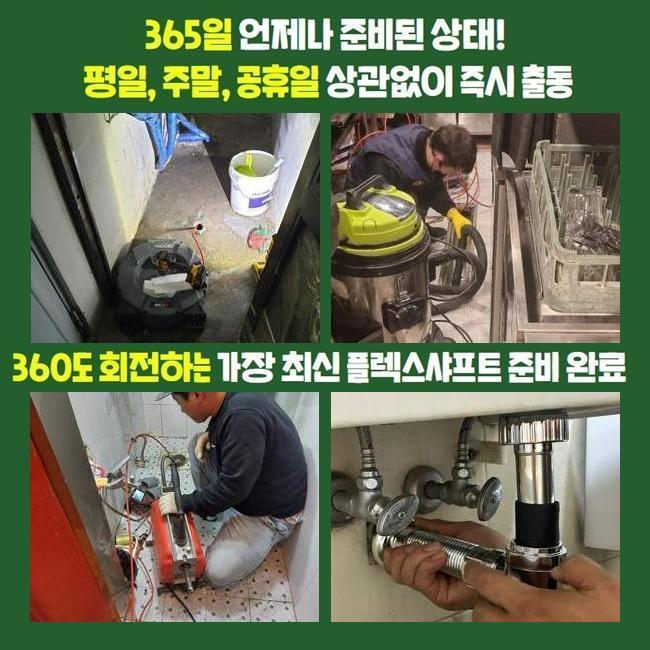
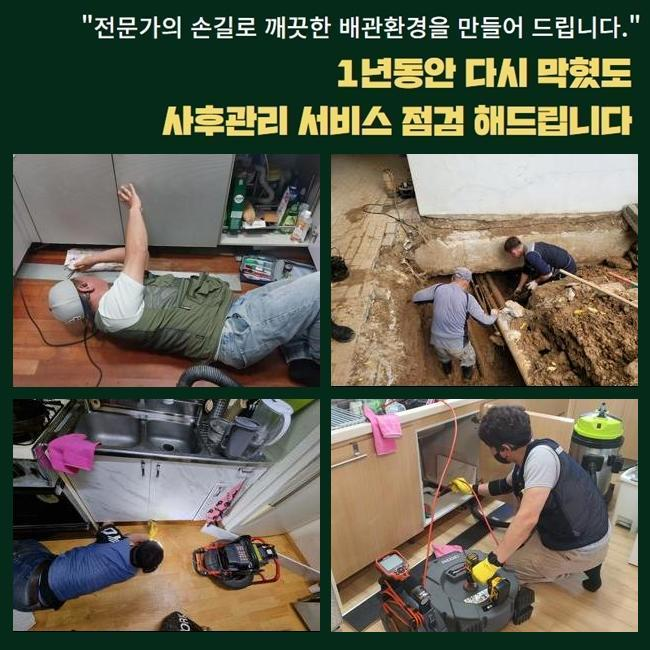
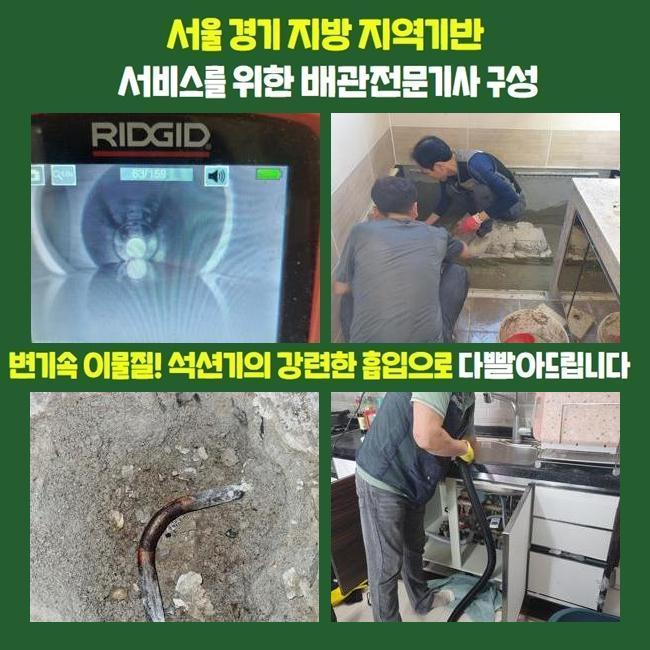
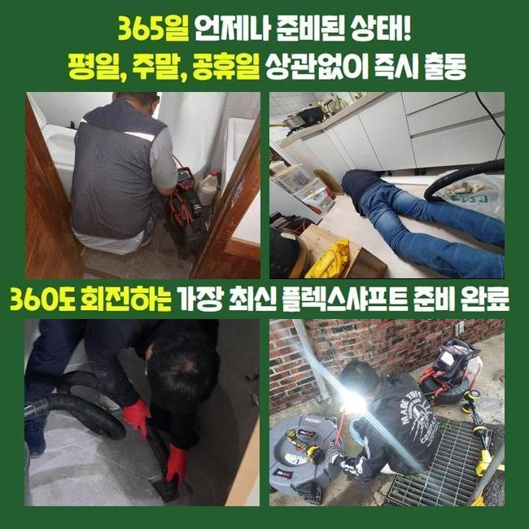
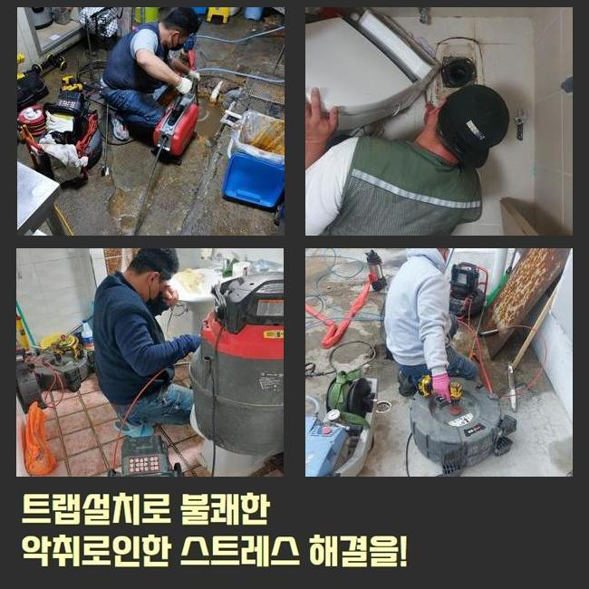
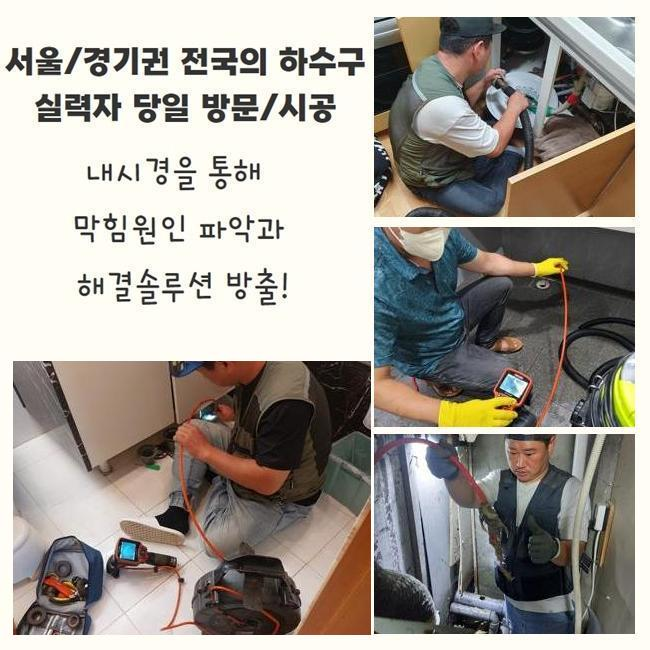
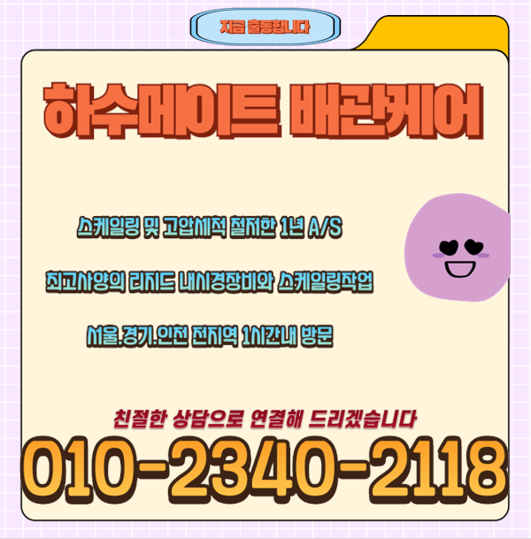

🏠 안산 안산동변기역류 사동 횡주관청소 배관공사
안산 변기막힘 전문 시공 후기

📋 작업 개요
- 위치: 안산
- 서비스 유형: 변기막힘, 배관막힘, 역류해결, 뚫는업체, 배관청소, 설비공사
- 작업 일시: 2025. 2. 13. 21:52
- 업체명: 하수구수사대 (010-5615-2118)
🔍 문제 상황
안산 안산동변기역류 사동 횡주관청소 배관공사
얼마전에 고객님 댁에 방문드려 외부에 존재하는 하수관을 뚫었는데요
전문성이 두드러지는 장비들을 통하여 뒤탈없이 처리해드렸어요
통수오류의 트러블이 발생된 건 저번주에서부터 였다고 해요
배수관은 통수과정에서 자연스럽게 잔여물질들이 빠지는데 내측을 시작으로 해 계속해서 누적되면서 각 라인이 막힙니다
잔해의 축적량과 크기마저 크다면 심해지게될텐데요
이물질마다 수도에 녹게되는건 제한이 존재합니다
이와같이 배수불가의 증세가 생겨나면 스스로의 방식으로 해결이 보이지않는 장소가 많은데요
고객님들이 스스로 평상시에 시도해봄직 한 것은 크리너나 뜨거운 물들을 쓰는건데요
문제들이 생기고서 시간들이 많이 안지났을때 시도할 수 있는 조치겠지만 외측의 경우엔 이렇다할 해결책이 되지 못해요
밖에서 증세들이 야기된다면 스스로 해결하는게 어려우므로 전문진의 해결책을 고려해보는게 좋답니다

🔎 원인 분석
💡 전문가 진단: 정밀 진단 장비를 사용하여 슬러지의 고착 여부를 판명하고 타격/세척 작업을 실시했습니다.
전문업체의 해결책으로 현장에서 어디에서부터 막히게되었는지 명확한 원인규명은 기본이고 자가적인 방식과달리 안정적으로 잔해물질들을 제거하므로 지속적으로 하수관을 깨끗히 관리하도록 하고있어요
이번 통수오류의 또한 저희전문가들은 적절한 장치들을 활용하여 확실히 찌꺼기또한 제거시켜서 심부까지 통수시켜주었어요
살펴보니 바깥에 존재하는 하수관에서 심화된 양상이 나타났고 대처해보는게 불가해보여 출장을 의뢰하셨어요
저희들은 고객분의 일정이 괜찮으시면 바로 찾아뵈어 그 날에 일련의 과정들을 착수하죠
의뢰를 받았더니 마당에서 문제가 생긴것으로 보였습니다
단독주택 바깥쪽에 있던 배수관이 막히면서 비들이 내릴때 넘치게되는 형상이였습니다
특히 강수 상황 시 폐기물들이나 담배꽁초와 같이 여러가지의 오염물들이 흘러들어가요
물청소 등을 할때 갑작스럽게 배수관으로 답답하게 내려가는 현상들이 많아졌다고 합니다
늘 그렇듯 고객분은 점차 괜찮아 지겠지 하시고는 수습하는것을 늦췄다고 하셨는데요
어느 순간 조치를 안한탓인지 갑작스레 수도들이 전혀 진전이 없었다고 해요
그리하여 오래도록 굉장히 느린 속도로 통수되는 현상을 보시고서 황급하게 전화하신거였는데요

🔧 작업 과정
마당이 단독으로 있어서 타 세대에게 불편을 전가시키진않겠으나 고객님의 차원에서 관리책 실시가 진행되야하는 지점입니다
그 즉시 방문이 가능한 데가 소수라 난처하셨는데 저희업체는 바로 가능해서 작업요청이 이루어진것인데요
저희업체는 평일을 넘어 휴무에도 찾아뵙고 연중무휴를 기준으로 청소해드리고 있기에 즉시 방문드려 시공에 집중했답니다
배수관은 깊어서 가시적으로 확인하기엔 제약이 있습니다
하수관에 내시경장치를 통하여 관찰이 힘든 위치에 잔해물이 어떤 양상으로 존재하는지 확인합니다
내시경으로 누적된 이물들을 어디서부터 없애주어야하는지 판단되면 실용적인 방식들을 결정해줍니다
1차적으로 샤프트장비를 이용해보고 구경이 큰 곳은 고압수청소를 쓰기로 결정했습니다
샤프트장치는 몸체와 연결된 케이블에 사슬모양의 노커부속품이 부착되어있는데 이 노커부품이 벽부분에 자리한 딱딱한 것들을 분쇄시키는 장치에요
상황에 알맞는 기기를 이용하여 뒤탈없이 결함들을 풀어냈습니다
작업시점에 혹시라도 작업에 뚫지못한다면 금액청구는 일절 없을것이라 안내드렸습니다
저희들은 애초에 고객님이 계신곳에 내방하는 경우 출장에 소요되는 비용들을 받는 일 없이 가므로 경제적인 부담이 덜하고 뚫어내지 못할 때에는 비용청구도 없으니 이런 사항도 참고해주세요
방문 시 작업하고 괄목할만한 개선없이 철수하여 출장비들을 받는 모든 작업은 없는것을 보증합니다
방문드렸던 장소의 경우 바깥에 위치한 스팟으로 흙들이 빠진 상태였고 침전된 기름때와 엉키게되며 끈적한 상태와 더불어 움직이지 못할정도로 굳은 상태였습니다
딱딱하게 뭉쳐져서 센터부터 배수공간들을 내주었죠
흡착상태가 심각해 간소하게 해결되는것은 아니였는데 심부라인까지 제거시키기위해선 출수구부터 고압노즐 장치를 운용시켜야되는 상태가었습니다
고수압의 기계들을 통해서 확실히 처리가 이뤄져야했던 상태가었습니다
내시경장치를 쓰면서 깊은 지점까지 작업을 이어갔지만 하수가 원활히 빠지는 상태가 아니었습니다
그 까닭으로는 흙들과 함께 기름때가 구간별로 큰 범위들에 걸쳐 축적되어 굳어버린 형태로 변모해서인데요


✅ 작업 완료
석션기 등이 이용되지 못하는 포인트로 고압수청소가 동반되야했답니다
발등에 불이 떨어져 고수압의 기기를 써 기름성분을 배출시키며 깊숙히 흡착된 잔해들을 작게 만들어 청소해주었습니다
빈틈없이 제거하니 점차 공간이 확보되며 배수과정이 진행됐고 실내외부의 구간들도 통수들이 이뤄졌죠
이와같은 사안들을 고객에게 안내하고 해당 장소의 해결은 끝나게되었죠
재발될 일이 없게끔 이용해주실때 꾸준히 관리해보시고 만에하나 1년안쪽으로 재차 등장하면 저희업체가 애프터서비스를 제공해드리니 걱정할 일 없으십니다!




⚠️ 하수구 배관 막힘 예방 및 관리 가이드
- ✅ 머리카락, 비닐, 물티슈 등 물에 분해되지 않는 이물질은 하수구 유입을 절대 금지해 주세요.
- ✅ 하수구 거름망을 씌우고 모여진 이물질은 주기적으로 쓰레기통에 바로 비워주셔야 합니다.
- ✅ 배관 노후가 심할 경우 이물질이 더 쉽게 걸리므로 주기적인 배관 세척(고압세척 등)을 권장합니다.
- ✅ 작업 후 1년 이내 재발 시 하수구수사대에서 무상 A/S 보증 서비스를 제공합니다.
💡 핵심 정리
- 확실한 장비 작업(내시경 점검 및 샤프트 스케일링)으로 원인을 뿌리 뽑습니다.
- 작업 후 1년 이내에 동일한 부위 재발 시 100% 무상 A/S 서비스를 보장합니다.
- 서울 · 경기 · 인천 전 지역에 24시간 언제든 긴급 출동할 수 있도록 항시 대기 중입니다.
❓ 자주 묻는 질문 (FAQ)
🚨 안산 변기막힘 문제로 고민이신가요?
정확한 원인 진단과 확실한 시공으로 재발 없는 해결을 약속드립니다.
24시간 긴급 출동 | 서울 · 경기 · 인천 전지역 | 1년 내 재발 시 무상 A/S